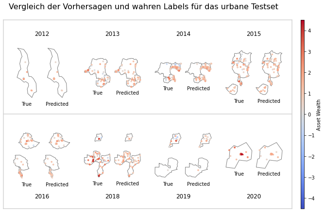
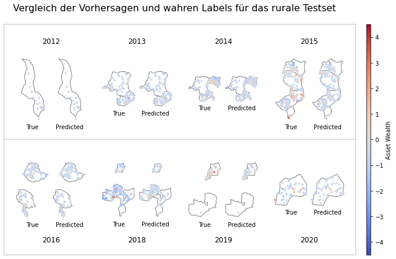
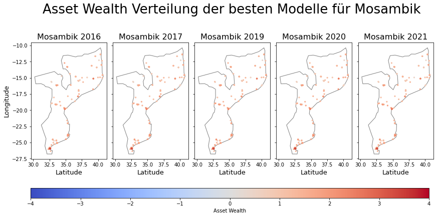
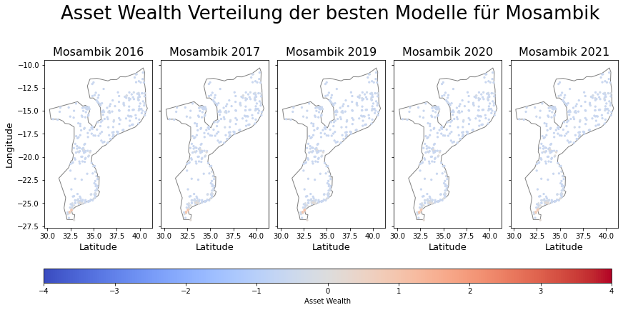
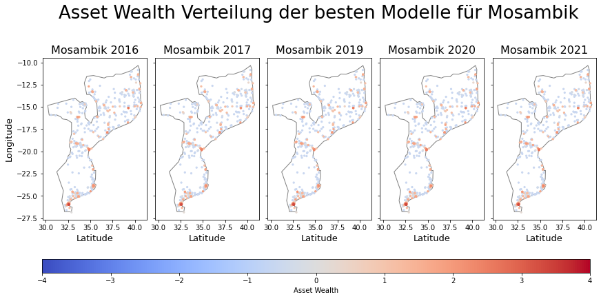

Predict Asset Wealth for Testset and Mozambique
Contents
Predict Asset Wealth for Testset and Mozambique#
Predict Asset Wealth for Testset#
[1]:
import os
os.environ['TF_CPP_MIN_LOG_LEVEL'] = '3'
os.environ["CUDA_DEVICE_ORDER"]="PCI_BUS_ID"
os.environ["CUDA_VISIBLE_DEVICES"]="2"
[2]:
import sys
sys.path.append("..")
from tensorflow import keras
from keras import optimizers, models
import matplotlib.pyplot as plt
from matplotlib import colors
import pandas as pd
import geopandas as gpd
from pyproj import CRS
import numpy as np
from tqdm.notebook import tqdm
import rasterio
from src.data_utils import combine_wealth_dfs
from src.data_utils import get_label_for_img
from src.data_utils import create_splits
crs = CRS("EPSG:4326")
Import Data#
Satellite Images#
[3]:
viirs_s2_path = '/mnt/datadisk/data/VIIRS_Sentinel2/asset/urban/all/'
viirs_path = '/mnt/datadisk/data/VIIRS/preprocessed/asset/rural//all/'
[4]:
all_urban_data = os.listdir(viirs_s2_path)
len(all_urban_data)
[4]:
2458
[5]:
all_rural_data = os.listdir(viirs_path)
len(all_rural_data)
[5]:
5602
Geographic Information#
[6]:
countries = list(set([x.split('_')[3] for x in all_urban_data]))
countries
[6]:
['UGA', 'COD', 'MOZ', 'MWI', 'ETH', 'ZMB', 'KEN', 'TZA', 'RWA', 'ZWE']
[7]:
world = gpd.read_file(gpd.datasets.get_path('naturalearth_lowres'))
countries_gdf = world[world.iso_a3.isin(countries)]
countries_gdf
[7]:
| pop_est | continent | name | iso_a3 | gdp_md_est | geometry | |
|---|---|---|---|---|---|---|
| 1 | 53950935 | Africa | Tanzania | TZA | 150600.0 | POLYGON ((33.90371 -0.95000, 34.07262 -1.05982... |
| 11 | 83301151 | Africa | Dem. Rep. Congo | COD | 66010.0 | POLYGON ((29.34000 -4.49998, 29.51999 -5.41998... |
| 13 | 47615739 | Africa | Kenya | KEN | 152700.0 | POLYGON ((39.20222 -4.67677, 37.76690 -3.67712... |
| 48 | 13805084 | Africa | Zimbabwe | ZWE | 28330.0 | POLYGON ((31.19141 -22.25151, 30.65987 -22.151... |
| 70 | 15972000 | Africa | Zambia | ZMB | 65170.0 | POLYGON ((30.74001 -8.34001, 31.15775 -8.59458... |
| 71 | 19196246 | Africa | Malawi | MWI | 21200.0 | POLYGON ((32.75938 -9.23060, 33.73972 -9.41715... |
| 72 | 26573706 | Africa | Mozambique | MOZ | 35010.0 | POLYGON ((34.55999 -11.52002, 35.31240 -11.439... |
| 165 | 105350020 | Africa | Ethiopia | ETH | 174700.0 | POLYGON ((47.78942 8.00300, 44.96360 5.00162, ... |
| 168 | 39570125 | Africa | Uganda | UGA | 84930.0 | POLYGON ((33.90371 -0.95000, 31.86617 -1.02736... |
| 169 | 11901484 | Africa | Rwanda | RWA | 21970.0 | POLYGON ((30.41910 -1.13466, 30.81613 -1.69891... |
Urban Data#
[8]:
X_train_val, X_test, y_train_val, y_test = create_splits(img_dir='/mnt/datadisk/data/VIIRS_Sentinel2/asset/urban/all/', wealth_path='/home/stoermer/Sentinel/gps_csv/', urban_rural='u', pre2015_path=False)
Gathering Label Data
100%|███████████████████████████████████████████████████████████████████████████████| 2458/2458 [01:03<00:00, 38.76it/s]
[9]:
wealth_df = combine_wealth_dfs('/home/stoermer/Sentinel/gps_csv/')
urban_test_labels = pd.DataFrame()
for x in tqdm(X_test):
urban_test_labels = pd.concat([urban_test_labels, get_label_for_img(wealth_df, x)])
urban_test_labels
[9]:
| WEALTH_INDEX | SURVEY_YEAR | LATNUM | LONGNUM | |
|---|---|---|---|---|
| 0 | 1.071443 | 2015 | -17.9025 | 30.6523 |
| 0 | -0.068987 | 2014 | -9.8081 | 29.0395 |
| 0 | 2.655006 | 2013 | -4.3835 | 15.3125 |
| 0 | 1.668783 | 2019 | 2.7515 | 32.2981 |
| 0 | 1.278176 | 2015 | -20.1791 | 28.6178 |
| ... | ... | ... | ... | ... |
| 0 | 0.780936 | 2016 | 13.3427 | 39.7597 |
| 0 | 0.980313 | 2016 | -5.7441 | 34.8325 |
| 0 | 0.135483 | 2019 | -2.7007 | 29.0006 |
| 0 | 2.779817 | 2018 | -25.8828 | 32.5081 |
| 0 | 0.327767 | 2016 | 7.2420 | 37.8950 |
492 rows × 4 columns
Get Predictions of Best Model#
[10]:
model = keras.models.load_model('./vgg19_viirs_s2_u.h5')
[11]:
data_urban = np.zeros(shape=(len(X_test), 14, 200, 200))
for index, img in tqdm(enumerate(X_test)):
# Read in each Image
with rasterio.open(os.path.join(viirs_s2_path, img)) as i:
array = i.read().astype("float32")
# Ensure that the Array is not empty
array[np.isnan(array)] = 0
assert not np.any(np.isnan(array)), "Float"
# Add to batch
data_urban[index] = array
# Check if batch is already full (Note: Index in batch array is from 0...4 hence we need to add +1 to batch_ele)
data_urban = data_urban.transpose(0, 2, 3, 1)
preds_urban = model.predict(data_urban)
len(preds_urban)
[11]:
492
Create Geo DataFrames for Groundtruth and Predictions#
[12]:
geometry = gpd.points_from_xy(urban_test_labels.LONGNUM, urban_test_labels.LATNUM)
true_urban_wealth_df = gpd.GeoDataFrame(urban_test_labels,
geometry=geometry,
crs=crs
)
true_urban_wealth_df['COUNTRY_CODE'] = [x.split('_')[3] for x in X_test]
true_urban_wealth_df = true_urban_wealth_df[['SURVEY_YEAR', 'geometry','COUNTRY_CODE','WEALTH_INDEX']]
true_urban_wealth_df.head(3)
[12]:
| SURVEY_YEAR | geometry | COUNTRY_CODE | WEALTH_INDEX | |
|---|---|---|---|---|
| 0 | 2015 | POINT (30.65230 -17.90250) | ZWE | 1.071443 |
| 0 | 2014 | POINT (29.03950 -9.80810) | ZMB | -0.068987 |
| 0 | 2013 | POINT (15.31250 -4.38350) | COD | 2.655006 |
[13]:
predicted_urban_wealth_df = true_urban_wealth_df.loc[:,['SURVEY_YEAR', 'geometry']]
predicted_urban_wealth_df['WEALTH_INDEX'] = preds_urban
predicted_urban_wealth_df
[13]:
| SURVEY_YEAR | geometry | WEALTH_INDEX | |
|---|---|---|---|
| 0 | 2015 | POINT (30.65230 -17.90250) | 1.538016 |
| 0 | 2014 | POINT (29.03950 -9.80810) | 0.407157 |
| 0 | 2013 | POINT (15.31250 -4.38350) | 2.204992 |
| 0 | 2019 | POINT (32.29810 2.75150) | 1.057997 |
| 0 | 2015 | POINT (28.61780 -20.17910) | 0.996908 |
| ... | ... | ... | ... |
| 0 | 2016 | POINT (39.75970 13.34270) | 0.425004 |
| 0 | 2016 | POINT (34.83250 -5.74410) | 1.155177 |
| 0 | 2019 | POINT (29.00060 -2.70070) | 0.764184 |
| 0 | 2018 | POINT (32.50810 -25.88280) | 1.686300 |
| 0 | 2016 | POINT (37.89500 7.24200) | 0.759801 |
492 rows × 3 columns
[14]:
crs = CRS("EPSG:4326")
predicted_urban_wealth_df = gpd.GeoDataFrame(predicted_urban_wealth_df,
geometry=predicted_urban_wealth_df['geometry'],
crs=crs)
true_urban_wealth_df = gpd.GeoDataFrame(true_urban_wealth_df,
geometry=true_urban_wealth_df['geometry'],
crs=crs)
Plot Predictions vs. Groundtruth#
[15]:
divnorm=colors.TwoSlopeNorm(vmin=-4.5, vcenter=0., vmax=4.5)
# plt.subplots_adjust(wspace=None, hspace=None)
markersize=7
predicted_countries_gdf = countries_gdf[countries_gdf.iso_a3.isin(true_urban_wealth_df.COUNTRY_CODE)]
mosaic = [['title_2012','title_2012','title_2012','title_2012','title_2012','title_2012','.',
'title_2013','title_2013','title_2013','title_2013','title_2013','title_2013','.',
'title_2014','title_2014','title_2014','title_2014','title_2014','title_2014','.',
'title_2015','title_2015','title_2015','title_2015','title_2015','title_2015'],
['true2012','true2012','true2012','pred2012','pred2012','pred2012','.',
'true2013', 'true2013','true2013','pred2013','pred2013','pred2013', '.',
'true2014','true2014','true2014','pred2014','pred2014','pred2014','.',
'true2015','true2015','true2015','pred2015','pred2015','pred2015'],
['title_2016','title_2016','title_2016','title_2016','title_2016','title_2016','.',
'title_2018','title_2018','title_2018','title_2018','title_2018','title_2018','.',
'title_2019','title_2019','title_2019','title_2019','title_2019','title_2019','.',
'title_2020','title_2020','title_2020','title_2020','title_2020','title_2020'],
['true2016','true2016','true2016','pred2016','pred2016','pred2016', '.',
'true2018','true2018','true2018', 'pred2018', 'pred2018','pred2018','.',
'true2019','true2019','true2019','pred2019','pred2019','pred2019','.',
'true2020', 'true2020', 'true2020','pred2020','pred2020','pred2020'],
]
fig, axes = plt.subplot_mosaic(mosaic,figsize=(10,6), gridspec_kw=(dict(height_ratios=(.8,3,.8,3))))#, constrained_layout=True)
fig.suptitle('Vergleich der Vorhersagen und wahren Labels für das urbane Testset',fontsize=16)
for index, row in enumerate(mosaic):
row = [k for k in row if k!='.']
keys=[]
for k in row:
if k not in keys:
keys.append(k)
# print(keys)
for k in keys:
predicted_countries_gdf = countries_gdf[countries_gdf.iso_a3.isin(true_urban_wealth_df[true_urban_wealth_df.SURVEY_YEAR==int(k[-4:])].COUNTRY_CODE)]
if k.startswith('title'):
if index==0:
axes[k].set_title(k[-4:], fontsize=12,y=0)
else:
axes[k].set_title(k[-4:], fontsize=12,y=-5.5)
elif k.startswith('true'):
predicted_countries_gdf.plot(ax=axes[k], color='white', edgecolor='grey')
true_urban_wealth_df[true_urban_wealth_df.SURVEY_YEAR==int(k[-4:])].sort_values(by='WEALTH_INDEX').plot(ax = axes[k], column='WEALTH_INDEX', cmap='coolwarm',norm=divnorm, markersize=markersize)
axes[k].set_xlabel('True')
else:
predicted_countries_gdf.plot(ax=axes[k], color='white', edgecolor='grey')
predicted_urban_wealth_df[predicted_urban_wealth_df.SURVEY_YEAR==int(k[-4:])].sort_values(by='WEALTH_INDEX').plot(ax = axes[k], column='WEALTH_INDEX', cmap='coolwarm',norm=divnorm, markersize=markersize)
axes[k].set_xlabel('Predicted')
axes[k].spines['top'].set_visible(False)
axes[k].spines['right'].set_visible(False)
axes[k].spines['bottom'].set_visible(False)
axes[k].spines['left'].set_visible(False)
axes[k].get_xaxis().set_ticks([])
axes[k].get_yaxis().set_ticks([])
line = plt.Line2D([0.1,.925],[.45,.45], transform=fig.transFigure, color="lightgrey")
fig.add_artist(line)
line = plt.Line2D([0.1,.925],[0,0], transform=fig.transFigure, color="lightgrey")
fig.add_artist(line)
line = plt.Line2D([0.1,.925],[.9,.9], transform=fig.transFigure, color="lightgrey")
fig.add_artist(line)
line = plt.Line2D([0.1,0.1],[0,.9], transform=fig.transFigure, color="lightgrey")
fig.add_artist(line)
line = plt.Line2D([.925,.925],[0,.9], transform=fig.transFigure, color="lightgrey")
fig.add_artist(line)
sm = plt.cm.ScalarMappable(norm=plt.Normalize(vmin=-4.5, vmax=4.5), cmap='coolwarm')
cbaxes = fig.add_axes([0.95, 0, 0.01, 0.9])
cbar = fig.colorbar(sm, orientation='vertical',label='Asset Wealth',cax=cbaxes)
plt.show()

Rural Data#
Get Label Data#
[16]:
wealth_df = combine_wealth_dfs('/home/stoermer/Sentinel/gps_csv/')
[17]:
X_train_val, X_test, y_train_val, y_test = create_splits(img_dir='/mnt/datadisk/data/VIIRS/preprocessed/asset/rural/all/', wealth_path='/home/stoermer/Sentinel/gps_csv/', urban_rural='r', pre2015_path=False)
Gathering Label Data
100%|███████████████████████████████████████████████████████████████████████████████| 5602/5602 [02:25<00:00, 38.55it/s]
[18]:
rural_test_labels = pd.DataFrame()
for x in tqdm(X_test):
rural_test_labels = pd.concat([rural_test_labels, get_label_for_img(wealth_df, x)])
rural_test_labels
[18]:
| WEALTH_INDEX | SURVEY_YEAR | LATNUM | LONGNUM | |
|---|---|---|---|---|
| 0 | -0.688140 | 2015 | -17.7214 | 31.7259 |
| 0 | -0.216390 | 2014 | -0.6815 | 35.2460 |
| 0 | -0.112214 | 2016 | 7.2301 | 35.3157 |
| 0 | -0.212770 | 2015 | -12.9103 | 34.2767 |
| 0 | -0.168055 | 2016 | -8.4875 | 39.2632 |
| ... | ... | ... | ... | ... |
| 0 | -0.734604 | 2014 | 1.9172 | 33.6136 |
| 0 | -0.500560 | 2015 | -1.7555 | 29.6134 |
| 0 | -0.504263 | 2015 | -16.4775 | 30.4724 |
| 0 | -0.375565 | 2014 | 0.0005 | 37.9925 |
| 0 | -0.537768 | 2015 | -4.4555 | 39.2872 |
1121 rows × 4 columns
Get Predictions of Best Model#
[19]:
model = keras.models.load_model('./resnet50_r_viirs.h5')
[20]:
data_rural = np.zeros(shape=(len(X_test), 3, 1000, 1000))
for index, img in tqdm(enumerate(X_test)):
# Read in each Image
with rasterio.open(os.path.join(viirs_path, img)) as i:
array = i.read().astype("float32")
# Ensure that the Array is not empty
array[np.isnan(array)] = 0
assert not np.any(np.isnan(array)), "Float"
# Add to batch
data_rural[index] = array
# Check if batch is already full (Note: Index in batch array is from 0...4 hence we need to add +1 to batch_ele)
data_rural = data_rural.transpose(0, 2, 3, 1)
preds_rural = model.predict(data_rural)
len(preds_rural)
[20]:
1121
Create Geo DataFrames for Groundtruth and Predictions#
[21]:
crs = CRS("EPSG:4326")
geometry = gpd.points_from_xy(rural_test_labels.LONGNUM, rural_test_labels.LATNUM)
true_rural_wealth_df = gpd.GeoDataFrame(rural_test_labels,
geometry=geometry,
crs=crs
)
true_rural_wealth_df['COUNTRY_CODE'] = [x.split('_')[3] for x in X_test]
true_rural_wealth_df = true_rural_wealth_df[['SURVEY_YEAR', 'geometry', 'COUNTRY_CODE','WEALTH_INDEX']]
true_rural_wealth_df.head(3)
[21]:
| SURVEY_YEAR | geometry | COUNTRY_CODE | WEALTH_INDEX | |
|---|---|---|---|---|
| 0 | 2015 | POINT (31.72590 -17.72140) | ZWE | -0.688140 |
| 0 | 2014 | POINT (35.24600 -0.68150) | KEN | -0.216390 |
| 0 | 2016 | POINT (35.31570 7.23010) | ETH | -0.112214 |
[22]:
predicted_rural_wealth_df = true_rural_wealth_df.loc[:,['SURVEY_YEAR', 'geometry', 'COUNTRY_CODE']]
predicted_rural_wealth_df['WEALTH_INDEX'] = preds_rural
predicted_rural_wealth_df.head(3)
[22]:
| SURVEY_YEAR | geometry | COUNTRY_CODE | WEALTH_INDEX | |
|---|---|---|---|---|
| 0 | 2015 | POINT (31.72590 -17.72140) | ZWE | -0.548155 |
| 0 | 2014 | POINT (35.24600 -0.68150) | KEN | -0.588530 |
| 0 | 2016 | POINT (35.31570 7.23010) | ETH | -0.588530 |
Plot Predictions vs. Groundtruth#
[23]:
divnorm=colors.TwoSlopeNorm(vmin=-4.5, vcenter=0., vmax=4.5)
# plt.subplots_adjust(wspace=None, hspace=None)
markersize=7
predicted_countries_gdf = countries_gdf[countries_gdf.iso_a3.isin(true_rural_wealth_df.COUNTRY_CODE)]
mosaic = [['title_2012','title_2012','title_2012','title_2012','title_2012','title_2012','.',
'title_2013','title_2013','title_2013','title_2013','title_2013','title_2013','.',
'title_2014','title_2014','title_2014','title_2014','title_2014','title_2014','.',
'title_2015','title_2015','title_2015','title_2015','title_2015','title_2015'],
['true2012','true2012','true2012','pred2012','pred2012','pred2012','.',
'true2013', 'true2013','true2013','pred2013','pred2013','pred2013', '.',
'true2014','true2014','true2014','pred2014','pred2014','pred2014','.',
'true2015','true2015','true2015','pred2015','pred2015','pred2015'],
['title_2016','title_2016','title_2016','title_2016','title_2016','title_2016','.',
'title_2018','title_2018','title_2018','title_2018','title_2018','title_2018','.',
'title_2019','title_2019','title_2019','title_2019','title_2019','title_2019','.',
'title_2020','title_2020','title_2020','title_2020','title_2020','title_2020'],
['true2016','true2016','true2016','pred2016','pred2016','pred2016', '.',
'true2018','true2018','true2018', 'pred2018', 'pred2018','pred2018','.',
'true2019','true2019','true2019','pred2019','pred2019','pred2019','.',
'true2020', 'true2020', 'true2020','pred2020','pred2020','pred2020'],
]
fig, axes = plt.subplot_mosaic(mosaic,figsize=(10,6), gridspec_kw=(dict(height_ratios=(.8,3,.8,3))))#, constrained_layout=True)
fig.suptitle('Vergleich der Vorhersagen und wahren Labels für das rurale Testset',fontsize=16)
for index, row in enumerate(mosaic):
row = [k for k in row if k!='.']
keys=[]
for k in row:
if k not in keys:
keys.append(k)
# print(keys)
for k in keys:
predicted_countries_gdf = countries_gdf[countries_gdf.iso_a3.isin(true_rural_wealth_df[true_rural_wealth_df.SURVEY_YEAR==int(k[-4:])].COUNTRY_CODE)]
if k.startswith('title'):
if index==0:
axes[k].set_title(k[-4:], fontsize=12,y=0)
else:
axes[k].set_title(k[-4:], fontsize=12,y=-5.5)
elif k.startswith('true'):
predicted_countries_gdf.plot(ax=axes[k], color='white', edgecolor='grey')
true_rural_wealth_df[true_rural_wealth_df.SURVEY_YEAR==int(k[-4:])].sort_values(by='WEALTH_INDEX').plot(ax = axes[k], column='WEALTH_INDEX', cmap='coolwarm',norm=divnorm, markersize=markersize)
axes[k].set_xlabel('True')
else:
predicted_countries_gdf.plot(ax=axes[k], color='white', edgecolor='grey')
predicted_rural_wealth_df[predicted_rural_wealth_df.SURVEY_YEAR==int(k[-4:])].sort_values(by='WEALTH_INDEX').plot(ax = axes[k], column='WEALTH_INDEX', cmap='coolwarm',norm=divnorm, markersize=markersize)
axes[k].set_xlabel('Predicted')
axes[k].spines['top'].set_visible(False)
axes[k].spines['right'].set_visible(False)
axes[k].spines['bottom'].set_visible(False)
axes[k].spines['left'].set_visible(False)
axes[k].get_xaxis().set_ticks([])
axes[k].get_yaxis().set_ticks([])
line = plt.Line2D([0.1,.925],[.45,.45], transform=fig.transFigure, color="lightgrey")
fig.add_artist(line)
line = plt.Line2D([0.1,.925],[0,0], transform=fig.transFigure, color="lightgrey")
fig.add_artist(line)
line = plt.Line2D([0.1,.925],[.9,.9], transform=fig.transFigure, color="lightgrey")
fig.add_artist(line)
line = plt.Line2D([0.1,0.1],[0,.9], transform=fig.transFigure, color="lightgrey")
fig.add_artist(line)
line = plt.Line2D([.925,.925],[0,.9], transform=fig.transFigure, color="lightgrey")
fig.add_artist(line)
sm = plt.cm.ScalarMappable(norm=plt.Normalize(vmin=-4.5, vmax=4.5), cmap='coolwarm')
cbaxes = fig.add_axes([0.95, 0, 0.01, 0.9])
cbar = fig.colorbar(sm, orientation='vertical',label='Asset Wealth',cax=cbaxes)
plt.show()

Combine rural and urban predictions and labels#
[24]:
predicted_wealth_df = pd.concat([predicted_rural_wealth_df,predicted_urban_wealth_df])
true_wealth_df = pd.concat([true_rural_wealth_df, true_urban_wealth_df])
Plot all predictions#
[25]:
divnorm=colors.TwoSlopeNorm(vmin=-4.5, vcenter=0., vmax=4.5)
markersize=5
predicted_countries_gdf = countries_gdf[countries_gdf.iso_a3.isin(true_rural_wealth_df.COUNTRY_CODE)]
mosaic = [['title_2012','title_2012','title_2012','title_2012','title_2012','title_2012','.',
'title_2013','title_2013','title_2013','title_2013','title_2013','title_2013','.',
'title_2014','title_2014','title_2014','title_2014','title_2014','title_2014','.',
'title_2015','title_2015','title_2015','title_2015','title_2015','title_2015'],
['true2012','true2012','true2012','pred2012','pred2012','pred2012','.',
'true2013', 'true2013','true2013','pred2013','pred2013','pred2013', '.',
'true2014','true2014','true2014','pred2014','pred2014','pred2014','.',
'true2015','true2015','true2015','pred2015','pred2015','pred2015'],
['title_2016','title_2016','title_2016','title_2016','title_2016','title_2016','.',
'title_2018','title_2018','title_2018','title_2018','title_2018','title_2018','.',
'title_2019','title_2019','title_2019','title_2019','title_2019','title_2019','.',
'title_2020','title_2020','title_2020','title_2020','title_2020','title_2020'],
['true2016','true2016','true2016','pred2016','pred2016','pred2016', '.',
'true2018','true2018','true2018', 'pred2018', 'pred2018','pred2018','.',
'true2019','true2019','true2019','pred2019','pred2019','pred2019','.',
'true2020', 'true2020', 'true2020','pred2020','pred2020','pred2020'],
]
fig, axes = plt.subplot_mosaic(mosaic,figsize=(10,6), gridspec_kw=(dict(height_ratios=(.8,3,.8,3))))#, constrained_layout=True)
fig.suptitle('Vergleich der Vorhersagen und wahren Labels für das rurale Testset',fontsize=16)
for index, row in enumerate(mosaic):
row = [k for k in row if k!='.']
keys=[]
for k in row:
if k not in keys:
keys.append(k)
for k in keys:
predicted_countries_gdf = countries_gdf[countries_gdf.iso_a3.isin(true_wealth_df[true_wealth_df.SURVEY_YEAR==int(k[-4:])].COUNTRY_CODE)]
if k.startswith('title'):
if index==0:
axes[k].set_title(k[-4:], fontsize=12,y=0)
else:
axes[k].set_title(k[-4:], fontsize=12,y=-5.5)
elif k.startswith('true'):
predicted_countries_gdf.plot(ax=axes[k], color='white', edgecolor='grey')
true_wealth_df[true_wealth_df.SURVEY_YEAR==int(k[-4:])].sort_values(by='WEALTH_INDEX').plot(ax = axes[k], column='WEALTH_INDEX', cmap='coolwarm',norm=divnorm, markersize=markersize)
axes[k].set_xlabel('True')
else:
predicted_countries_gdf.plot(ax=axes[k], color='white', edgecolor='grey')
predicted_wealth_df[predicted_wealth_df.SURVEY_YEAR==int(k[-4:])].sort_values(by='WEALTH_INDEX').plot(ax = axes[k], column='WEALTH_INDEX', cmap='coolwarm',norm=divnorm, markersize=markersize)
axes[k].set_xlabel('Predicted')
axes[k].spines['top'].set_visible(False)
axes[k].spines['right'].set_visible(False)
axes[k].spines['bottom'].set_visible(False)
axes[k].spines['left'].set_visible(False)
axes[k].get_xaxis().set_ticks([])
axes[k].get_yaxis().set_ticks([])
line = plt.Line2D([0.1,.925],[.45,.45], transform=fig.transFigure, color="lightgrey")
fig.add_artist(line)
line = plt.Line2D([0.1,.925],[0,0], transform=fig.transFigure, color="lightgrey")
fig.add_artist(line)
line = plt.Line2D([0.1,.925],[.9,.9], transform=fig.transFigure, color="lightgrey")
fig.add_artist(line)
line = plt.Line2D([0.1,0.1],[0,.9], transform=fig.transFigure, color="lightgrey")
fig.add_artist(line)
line = plt.Line2D([.925,.925],[0,.9], transform=fig.transFigure, color="lightgrey")
fig.add_artist(line)
sm = plt.cm.ScalarMappable(norm=plt.Normalize(vmin=-4.5, vmax=4.5), cmap='coolwarm')
cbaxes = fig.add_axes([0.95, 0, 0.01, 0.9])
cbar = fig.colorbar(sm, orientation='vertical',label='Asset Wealth',cax=cbaxes)
plt.show()
Get r2 Score for best Models#
[13]:
from sklearn.metrics import mean_squared_error, r2_score
urban_r2_score = r2_score(true_urban_wealth_df.WEALTH_INDEX, predicted_urban_wealth_df.WEALTH_INDEX)
rural_r2_score = r2_score(true_rural_wealth_df.WEALTH_INDEX, predicted_rural_wealth_df.WEALTH_INDEX)
print(urban_r2_score)
rural_r2_score
0.32608796277450536
[13]:
0.14404635936378374
Save Predictions and Groundtruth#
[26]:
predicted_urban_wealth_df.to_csv('./predicted_urban_wealth_df.csv')
true_urban_wealth_df.to_csv('./true_urban_wealth_df.csv')
predicted_rural_wealth_df.to_csv('./predicted_rural_wealth_df.csv')
true_rural_wealth_df.to_csv('./true_rural_wealth_df.csv')
[6]:
predicted_urban_wealth_df = pd.read_csv('./predicted_urban_wealth_df.csv')[['SURVEY_YEAR','geometry', 'WEALTH_INDEX']]
predicted_urban_wealth_df = gpd.GeoDataFrame(predicted_urban_wealth_df.loc[:, [c for c in predicted_urban_wealth_df.columns if c != "geometry"]],
geometry=gpd.GeoSeries.from_wkt(predicted_urban_wealth_df["geometry"]),
crs=crs,
)
true_urban_wealth_df = pd.read_csv('./true_urban_wealth_df.csv')[['SURVEY_YEAR','geometry','COUNTRY_CODE', 'WEALTH_INDEX']]
true_urban_wealth_df = gpd.GeoDataFrame(true_urban_wealth_df.loc[:, [c for c in true_urban_wealth_df.columns if c != "geometry"]],
geometry=gpd.GeoSeries.from_wkt(true_urban_wealth_df["geometry"]),
crs=crs,
)
predicted_rural_wealth_df = pd.read_csv('./predicted_rural_wealth_df.csv')[['SURVEY_YEAR','geometry', 'WEALTH_INDEX']]
predicted_rural_wealth_df = gpd.GeoDataFrame(predicted_rural_wealth_df.loc[:, [c for c in predicted_rural_wealth_df.columns if c != "geometry"]],
geometry=gpd.GeoSeries.from_wkt(predicted_rural_wealth_df["geometry"]),
crs=crs,
)
true_rural_wealth_df = pd.read_csv('./true_rural_wealth_df.csv')[['SURVEY_YEAR','geometry','COUNTRY_CODE', 'WEALTH_INDEX']]
true_rural_wealth_df = gpd.GeoDataFrame(true_rural_wealth_df.loc[:, [c for c in true_rural_wealth_df.columns if c != "geometry"]],
geometry=gpd.GeoSeries.from_wkt(true_rural_wealth_df["geometry"]),
crs=crs,
)
Predict Asset Wealth for Mozambique#
Load general geographic Data of Mozambique#
[28]:
world = gpd.read_file(gpd.datasets.get_path('naturalearth_lowres'))
moz = world[world.name=='Mozambique']
Load Mozambique Survey Data#
[29]:
moz_df = pd.read_csv('./moz_2016_2021.csv')
moz_df = moz_df[['URBAN_RURA', 'LATNUM', 'LONGNUM', 'SURVEY_YEAR', 'Filename']]
print(moz_df.shape)
moz_df.head(3)
(2635, 5)
[29]:
| URBAN_RURA | LATNUM | LONGNUM | SURVEY_YEAR | Filename | |
|---|---|---|---|---|---|
| 0 | 0 | -13.2856 | 35.2311 | 2016 | -13.2856_35.2311_20160101-20161231_MOZ_u_2.0.tif |
| 1 | 0 | -13.3226 | 35.2552 | 2016 | -13.3226_35.2552_20160101-20161231_MOZ_u_2.0.tif |
| 2 | 0 | -13.2716 | 35.1965 | 2016 | -13.2716_35.1965_20160101-20161231_MOZ_u_2.0.tif |
Urban#
Load Data for Mozambique 2016, 2017, 2019, 2020 and 2021#
[30]:
model = keras.models.load_model('./vgg19_viirs_s2_u.h5')
[31]:
moz_path_urban = '/mnt/datadisk/data/VIIRS_Sentinel2/asset/urban/mozambique_2016_2021'
moz_list_urban = os.listdir(moz_path_urban)
len(moz_list_urban)
[31]:
1115
[32]:
moz_2016_urban = [i for i in moz_list_urban if '2016' in i]
moz_2017_urban = [i for i in moz_list_urban if '2017' in i]
moz_2019_urban = [i for i in moz_list_urban if '2019' in i]
moz_2020_urban = [i for i in moz_list_urban if '2020' in i]
moz_2021_urban = [i for i in moz_list_urban if '2021' in i]
[33]:
data_urban = {}
for moz_data_urban in [[moz_2016_urban,'2016'],[moz_2017_urban,'2017'],[moz_2019_urban,'2019'],[moz_2020_urban,'2020'],[moz_2021_urban,'2021']]:
data_urban[moz_data_urban[1]] = np.zeros(shape=(len(moz_data_urban[0]), 14, 200, 200))
for index, img in tqdm(enumerate(moz_data_urban[0])):
# Read in each Image
with rasterio.open(os.path.join(moz_path_urban, img)) as i:
array = i.read().astype("float32")
# Ensure that the Array is not empty
array[np.isnan(array)] = 0
assert not np.any(np.isnan(array)), "Float"
data_urban[moz_data_urban[1]][index] = array
data_urban[moz_data_urban[1]] = data_urban[moz_data_urban[1]].transpose(0, 2, 3, 1)
assert len(data_urban[moz_data_urban[1]]) == len(moz_data_urban[0])
Predict Asset Wealth#
[34]:
preds_urban = {}
for year in tqdm(data_urban.keys()):
preds_urban[year] = model.predict(data_urban[year])
print(preds_urban.keys())
len(preds_urban['2016'])
dict_keys(['2016', '2017', '2019', '2020', '2021'])
[34]:
223
[35]:
pred_file_urban_dict = {'Filename':moz_2016_urban+moz_2017_urban+moz_2019_urban+moz_2020_urban+moz_2021_urban,
'Prediction':[pred[0] for pred in preds_urban['2016']]+
[pred[0] for pred in preds_urban['2017']]+
[pred[0] for pred in preds_urban['2019']]+
[pred[0] for pred in preds_urban['2020']]+
[pred[0] for pred in preds_urban['2021']]}
pred_file_urban_df = pd.DataFrame(pred_file_urban_dict)
print(pred_file_urban_df.shape)
pred_file_urban_df.head(3)
(1115, 2)
[35]:
| Filename | Prediction | |
|---|---|---|
| 0 | -25.9443_32.6146_20160101-20161231_MOZ_u_2.0.tif | 1.961596 |
| 1 | -25.9002_32.6141_20160101-20161231_MOZ_u_2.0.tif | 1.722382 |
| 2 | -23.7538_35.3463_20160101-20161231_MOZ_u_2.0.tif | 1.993611 |
Merge Predictions with Survey Data#
[36]:
asset_pred_urban_df = moz_df.merge(pred_file_urban_df)
print(asset_pred_urban_df.shape)
asset_pred_urban_df.head(3)
(1115, 6)
[36]:
| URBAN_RURA | LATNUM | LONGNUM | SURVEY_YEAR | Filename | Prediction | |
|---|---|---|---|---|---|---|
| 0 | 0 | -13.2856 | 35.2311 | 2016 | -13.2856_35.2311_20160101-20161231_MOZ_u_2.0.tif | 1.521431 |
| 1 | 0 | -13.3226 | 35.2552 | 2016 | -13.3226_35.2552_20160101-20161231_MOZ_u_2.0.tif | 1.153307 |
| 2 | 0 | -13.2716 | 35.1965 | 2016 | -13.2716_35.1965_20160101-20161231_MOZ_u_2.0.tif | 1.414657 |
Merge Predictions with Survey Data#
[37]:
geometry = gpd.points_from_xy(asset_pred_urban_df.LONGNUM, asset_pred_urban_df.LATNUM)
[38]:
asset_pred_urban_df = gpd.GeoDataFrame(asset_pred_urban_df,
geometry=geometry,
crs=crs
)
asset_pred_urban_df = asset_pred_urban_df[['SURVEY_YEAR', 'geometry', 'Prediction']]
print(asset_pred_urban_df.shape)
asset_pred_urban_df.head(3)
(1115, 3)
[38]:
| SURVEY_YEAR | geometry | Prediction | |
|---|---|---|---|
| 0 | 2016 | POINT (35.23110 -13.28560) | 1.521431 |
| 1 | 2016 | POINT (35.25520 -13.32260) | 1.153307 |
| 2 | 2016 | POINT (35.19650 -13.27160) | 1.414657 |
[39]:
urban_2016_df = asset_pred_urban_df[asset_pred_urban_df.SURVEY_YEAR==2016]
urban_2016_df.shape
urban_2017_df = asset_pred_urban_df[asset_pred_urban_df.SURVEY_YEAR==2017]
urban_2017_df.shape
urban_2019_df = asset_pred_urban_df[asset_pred_urban_df.SURVEY_YEAR==2019]
urban_2019_df.shape
urban_2020_df = asset_pred_urban_df[asset_pred_urban_df.SURVEY_YEAR==2020]
urban_2020_df.shape
urban_2021_df = asset_pred_urban_df[asset_pred_urban_df.SURVEY_YEAR==2021]
urban_2021_df.shape
[39]:
(223, 3)
[40]:
fig, axes = plt.subplots(1, 5, sharey=True,constrained_layout=True, figsize=(12,9))
from matplotlib import colors
divnorm=colors.TwoSlopeNorm(vmin=-4, vcenter=0, vmax=4)
markersize=5
subplot_title_size = 16
axes[0].set_aspect('equal')
plt.suptitle('Asset Wealth Verteilung der besten Modelle für Mosambik', fontsize=26, y=.8, x=0.53)
moz.plot(ax=axes[0], color='white', edgecolor='grey')
urban_2016_df.sort_values(by='Prediction').plot(ax = axes[0], column='Prediction',
cmap='coolwarm', norm=divnorm, markersize=markersize)
axes[0].set_xlabel('Latitude', fontsize=13)
axes[0].set_ylabel('Longitude', fontsize=13)
axes[0].set_title('Mosambik 2016', fontsize=subplot_title_size)
axes[0].set_aspect('equal')
moz.plot(ax=axes[1], color='white', edgecolor='grey')
urban_2017_df.sort_values(by='Prediction').plot(ax = axes[1], column='Prediction',
cmap='coolwarm', norm=divnorm, markersize=markersize)
axes[1].set_xlabel('Latitude', fontsize=13)
axes[1].set_title('Mosambik 2017', fontsize=subplot_title_size)
axes[1].set_aspect('equal')
moz.plot(ax=axes[2], color='white', edgecolor='grey')
urban_2019_df.sort_values(by='Prediction').plot(ax = axes[2], column='Prediction',
cmap='coolwarm', norm=divnorm, markersize=markersize)
axes[2].set_xlabel('Latitude', fontsize=13)
axes[2].set_title('Mosambik 2019', fontsize=subplot_title_size)
axes[2].set_aspect('equal')
moz.plot(ax=axes[3], color='white', edgecolor='grey')
urban_2020_df.sort_values(by='Prediction').plot(ax = axes[3], column='Prediction',
cmap='coolwarm', norm=divnorm, markersize=markersize)
axes[3].set_xlabel('Latitude', fontsize=13)
axes[3].set_title('Mosambik 2020', fontsize=subplot_title_size)
axes[3].set_aspect('equal')
moz.plot(ax=axes[4], color='white', edgecolor='grey')
urban_2021_df.sort_values(by='Prediction').plot(ax = axes[4], column='Prediction',
cmap='coolwarm', norm=divnorm, markersize=markersize)
axes[4].set_xlabel('Latitude', fontsize=13)
axes[4].set_title('Mosambik 2021', fontsize=subplot_title_size)
axes[4].set_aspect('equal')
sm = plt.cm.ScalarMappable(norm=plt.Normalize(vmin=-4, vmax=4), cmap='coolwarm')
cbaxes = fig.add_axes([0.066, 0.2, .92, 0.03])
cbar = fig.colorbar(sm, orientation='horizontal',label='Asset Wealth',cax=cbaxes)
plt.show()

Rural#
Load Data for Mozambique 2016, 2017, 2019, 2020 and 2021#
[41]:
model = keras.models.load_model('./resnet50_r_viirs.h5')
[42]:
moz_path_rural = '/mnt/datadisk/data/VIIRS/preprocessed/asset/rural/mozambique_2016_2021/prep'
moz_rural = os.listdir(moz_path_rural)
len(moz_rural)
[42]:
1520
[43]:
moz_2016_rural = [i for i in moz_rural if '2016' in i]
moz_2017_rural = [i for i in moz_rural if '2017' in i]
moz_2019_rural = [i for i in moz_rural if '2019' in i]
moz_2020_rural = [i for i in moz_rural if '2020' in i]
moz_2021_rural = [i for i in moz_rural if '2021' in i]
[44]:
data_rural= {}
for moz_data_rural in [[moz_2016_rural,'2016'],[moz_2017_rural,'2017'],[moz_2019_rural,'2019'],[moz_2020_rural,'2020'],[moz_2021_rural,'2021']]:
data_rural[moz_data_rural[1]] = np.zeros(shape=(len(moz_data_rural[0]), 3, 1000, 1000))
for index, img in tqdm(enumerate(moz_data_rural[0])):
# Read in each Image
with rasterio.open(os.path.join(moz_path_rural, img)) as i:
array = i.read().astype("float32")
# Ensure that the Array is not empty
array[np.isnan(array)] = 0
assert not np.any(np.isnan(array)), "Float"
# Add to batch
data_rural[moz_data_rural[1]][index] = array
# Check if batch is already full (Note: Index in batch array is from 0...4 hence we need to add +1 to batch_ele)
data_rural[moz_data_rural[1]] = data_rural[moz_data_rural[1]].transpose(0, 2, 3, 1)
assert len(data_rural[moz_data_rural[1]]) == len(moz_data_rural[0])
Predict Asset Wealth#
[45]:
from tensorflow.keras import optimizers, models
preds_rural = {}
for year in tqdm(data_rural.keys()):
preds_rural[year] = model.predict(data_rural[year])
print(preds_rural.keys())
len(preds_rural['2016'])
dict_keys(['2016', '2017', '2019', '2020', '2021'])
[45]:
304
[46]:
pred_rural_file_dict = {'Filename':
moz_2016_rural+
moz_2017_rural+
moz_2019_rural+
moz_2020_rural+
moz_2021_rural,
'Prediction':
[pred[0] for pred in preds_rural['2016']]+
[pred[0] for pred in preds_rural['2017']]+
[pred[0] for pred in preds_rural['2019']]+
[pred[0] for pred in preds_rural['2020']]+
[pred[0] for pred in preds_rural['2021']]}
pred_rural_file_df = pd.DataFrame(pred_rural_file_dict)
print(pred_rural_file_df.shape)
pred_rural_file_df.head(3)
(1520, 2)
[46]:
| Filename | Prediction | |
|---|---|---|
| 0 | -20.5253_34.0313_20160101-20161231_MOZ_r_10.0.tif | -0.588530 |
| 1 | -14.4227_38.3001_20160101-20161231_MOZ_r_10.0.tif | -0.469308 |
| 2 | -15.8257_38.5071_20160101-20161231_MOZ_r_10.0.tif | -0.588530 |
Merge Predictions with Survey Data#
[47]:
asset_pred_rural_df = moz_df.merge(pred_rural_file_df)
print(asset_pred_rural_df.shape)
asset_pred_rural_df.head(3)
(1520, 6)
[47]:
| URBAN_RURA | LATNUM | LONGNUM | SURVEY_YEAR | Filename | Prediction | |
|---|---|---|---|---|---|---|
| 0 | 1 | -15.1365 | 36.5967 | 2016 | -15.1365_36.5967_20160101-20161231_MOZ_r_10.0.tif | -0.266213 |
| 1 | 1 | -14.6769 | 36.4565 | 2016 | -14.6769_36.4565_20160101-20161231_MOZ_r_10.0.tif | -0.588530 |
| 2 | 1 | -12.0948 | 34.8491 | 2016 | -12.0948_34.8491_20160101-20161231_MOZ_r_10.0.tif | -0.588530 |
Get Geocoordinates and create Geometry Objects#
Merge Predictions with Survey Data#
[48]:
geometry = gpd.points_from_xy(asset_pred_rural_df.LONGNUM, asset_pred_rural_df.LATNUM)
[49]:
asset_pred_rural_df = gpd.GeoDataFrame(asset_pred_rural_df,
geometry=geometry,
crs=crs
)
asset_pred_rural_df = asset_pred_rural_df[['SURVEY_YEAR', 'geometry', 'Prediction']]
print(asset_pred_rural_df.shape)
asset_pred_rural_df.head(3)
(1520, 3)
[49]:
| SURVEY_YEAR | geometry | Prediction | |
|---|---|---|---|
| 0 | 2016 | POINT (36.59670 -15.13650) | -0.266213 |
| 1 | 2016 | POINT (36.45650 -14.67690) | -0.588530 |
| 2 | 2016 | POINT (34.84910 -12.09480) | -0.588530 |
[50]:
asset_pred_rural_df.to_csv('./moz_rural_asset_wealth_prediction.csv')
[51]:
rural_2016_df = asset_pred_rural_df[asset_pred_rural_df.SURVEY_YEAR==2016]
rural_2016_df.shape
rural_2017_df = asset_pred_rural_df[asset_pred_rural_df.SURVEY_YEAR==2017]
rural_2017_df.shape
rural_2019_df = asset_pred_rural_df[asset_pred_rural_df.SURVEY_YEAR==2019]
rural_2019_df.shape
rural_2020_df = asset_pred_rural_df[asset_pred_rural_df.SURVEY_YEAR==2020]
rural_2020_df.shape
rural_2021_df = asset_pred_rural_df[asset_pred_rural_df.SURVEY_YEAR==2021]
rural_2021_df.shape
[51]:
(304, 3)
[52]:
fig, axes = plt.subplots(1, 5, sharey=True,constrained_layout=True, figsize=(12,9))
from matplotlib import colors
divnorm=colors.TwoSlopeNorm(vmin=-4, vcenter=0, vmax=4)
markersize=5
subplot_title_size = 16
axes[0].set_aspect('equal')
plt.suptitle('Asset Wealth Verteilung der besten Modelle für Mosambik', fontsize=26, y=.8, x=0.53)
moz.plot(ax=axes[0], color='white', edgecolor='grey')
rural_2016_df.sort_values(by='Prediction').plot(ax = axes[0], column='Prediction',
cmap='coolwarm', norm=divnorm, markersize=markersize)
axes[0].set_xlabel('Latitude', fontsize=13)
axes[0].set_ylabel('Longitude', fontsize=13)
axes[0].set_title('Mosambik 2016', fontsize=subplot_title_size)
axes[0].set_aspect('equal')
moz.plot(ax=axes[1], color='white', edgecolor='grey')
rural_2017_df.sort_values(by='Prediction').plot(ax = axes[1], column='Prediction',
cmap='coolwarm', norm=divnorm, markersize=markersize)
axes[1].set_xlabel('Latitude', fontsize=13)
axes[1].set_title('Mosambik 2017', fontsize=subplot_title_size)
axes[1].set_aspect('equal')
moz.plot(ax=axes[2], color='white', edgecolor='grey')
rural_2019_df.sort_values(by='Prediction').plot(ax = axes[2], column='Prediction',
cmap='coolwarm', norm=divnorm, markersize=markersize)
axes[2].set_xlabel('Latitude', fontsize=13)
axes[2].set_title('Mosambik 2019', fontsize=subplot_title_size)
axes[2].set_aspect('equal')
moz.plot(ax=axes[3], color='white', edgecolor='grey')
rural_2020_df.sort_values(by='Prediction').plot(ax = axes[3], column='Prediction',
cmap='coolwarm', norm=divnorm, markersize=markersize)
axes[3].set_xlabel('Latitude', fontsize=13)
axes[3].set_title('Mosambik 2020', fontsize=subplot_title_size)
axes[3].set_aspect('equal')
moz.plot(ax=axes[4], color='white', edgecolor='grey')
rural_2021_df.sort_values(by='Prediction').plot(ax = axes[4], column='Prediction',
cmap='coolwarm', norm=divnorm, markersize=markersize)
axes[4].set_xlabel('Latitude', fontsize=13)
axes[4].set_title('Mosambik 2021', fontsize=subplot_title_size)
axes[4].set_aspect('equal')
sm = plt.cm.ScalarMappable(norm=plt.Normalize(vmin=-4, vmax=4), cmap='coolwarm')
cbaxes = fig.add_axes([0.066, 0.2, .92, 0.03])
cbar = fig.colorbar(sm, orientation='horizontal',label='Asset Wealth',cax=cbaxes)
plt.show()

Plot Predictions#
[53]:
fig, axes = plt.subplots(1, 5, sharey=True,constrained_layout=True, figsize=(12,9))
from matplotlib import colors
divnorm=colors.TwoSlopeNorm(vmin=-4, vcenter=0, vmax=4)
markersize=5
subplot_title_size = 16
axes[0].set_aspect('equal')
plt.suptitle('Asset Wealth Verteilung der besten Modelle für Mosambik', fontsize=26, y=.8, x=0.53)
moz.plot(ax=axes[0], color='white', edgecolor='grey')
rural_2016_df.sort_values(by='Prediction').plot(ax = axes[0], column='Prediction',
cmap='coolwarm', norm=divnorm, markersize=markersize)
urban_2016_df.sort_values(by='Prediction').plot(ax = axes[0], column='Prediction',
cmap='coolwarm', norm=divnorm, markersize=markersize)
axes[0].set_xlabel('Latitude', fontsize=13)
axes[0].set_ylabel('Longitude', fontsize=13)
axes[0].set_title('Mosambik 2016', fontsize=subplot_title_size)
axes[0].set_aspect('equal')
moz.plot(ax=axes[1], color='white', edgecolor='grey')
rural_2017_df.sort_values(by='Prediction').plot(ax = axes[1], column='Prediction',
cmap='coolwarm', norm=divnorm, markersize=markersize)
urban_2017_df.sort_values(by='Prediction').plot(ax = axes[1], column='Prediction',
cmap='coolwarm', norm=divnorm, markersize=markersize)
axes[1].set_xlabel('Latitude', fontsize=13)
axes[1].set_title('Mosambik 2017', fontsize=subplot_title_size)
axes[1].set_aspect('equal')
moz.plot(ax=axes[2], color='white', edgecolor='grey')
rural_2019_df.sort_values(by='Prediction').plot(ax = axes[2], column='Prediction',
cmap='coolwarm', norm=divnorm, markersize=markersize)
urban_2019_df.sort_values(by='Prediction').plot(ax = axes[2], column='Prediction',
cmap='coolwarm', norm=divnorm, markersize=markersize)
axes[2].set_xlabel('Latitude', fontsize=13)
axes[2].set_title('Mosambik 2019', fontsize=subplot_title_size)
axes[2].set_aspect('equal')
moz.plot(ax=axes[3], color='white', edgecolor='grey')
rural_2020_df.sort_values(by='Prediction').plot(ax = axes[3], column='Prediction',
cmap='coolwarm', norm=divnorm, markersize=markersize)
urban_2020_df.sort_values(by='Prediction').plot(ax = axes[3], column='Prediction',
cmap='coolwarm', norm=divnorm, markersize=markersize)
axes[3].set_xlabel('Latitude', fontsize=13)
axes[3].set_title('Mosambik 2020', fontsize=subplot_title_size)
axes[3].set_aspect('equal')
moz.plot(ax=axes[4], color='white', edgecolor='grey')
rural_2021_df.sort_values(by='Prediction').plot(ax = axes[4], column='Prediction',
cmap='coolwarm', norm=divnorm, markersize=markersize)
urban_2021_df.sort_values(by='Prediction').plot(ax = axes[4], column='Prediction',
cmap='coolwarm', norm=divnorm, markersize=markersize)
axes[4].set_xlabel('Latitude', fontsize=13)
axes[4].set_title('Mosambik 2021', fontsize=subplot_title_size)
axes[4].set_aspect('equal')
sm = plt.cm.ScalarMappable(norm=plt.Normalize(vmin=-4, vmax=4), cmap='coolwarm')
cbaxes = fig.add_axes([0.066, 0.2, .92, 0.03])
cbar = fig.colorbar(sm, orientation='horizontal',label='Asset Wealth',cax=cbaxes)
plt.show()

[54]:
data = {'urban': {'2016': urban_2016_df,
'2017': urban_2017_df,
'2019': urban_2019_df,
'2020': urban_2020_df,
'2021': urban_2021_df},
'rural': {'2016': rural_2016_df,
'2017': rural_2017_df,
'2019': rural_2019_df,
'2020': rural_2020_df,
'2021': rural_2021_df}
}
statistics = []
for ur, ur_data in data.items():
for year, pred in ur_data.items():
statistics.append([ur,
year,
round(pred.Prediction.min(),2),
round(pred.Prediction.max(),2),
round(pred.Prediction.mean(),2),
round(pred.Prediction.median(),2),
round(pred.Prediction.var(),2),
round(pred.Prediction.skew(),2),
round(pred.Prediction.kurtosis(),2)])
pred_statistics_df = pd.DataFrame(data=statistics, columns=['Urban/Rural','Jahr','Min','Max', 'Arithmetisches\nMittel','Median','Varianz','Schiefe','Kurtosis'])
pred_statistics_df
['urban', '2016', 0.32, 3.38, 1.53, 1.45, 0.32, 0.57, 0.7]
['urban', '2017', 0.32, 3.3, 1.55, 1.51, 0.32, 0.47, 0.48]
['urban', '2019', 0.33, 3.36, 1.57, 1.52, 0.3, 0.61, 0.88]
['urban', '2020', 0.35, 3.4, 1.59, 1.53, 0.34, 0.58, 0.55]
['urban', '2021', 0.33, 3.32, 1.57, 1.53, 0.34, 0.53, 0.47]
['rural', '2016', -0.62, 1.02, -0.52, -0.59, 0.04, 4.61, 25.61]
['rural', '2017', -0.63, 1.02, -0.51, -0.59, 0.05, 4.16, 20.34]
['rural', '2019', -0.62, 1.05, -0.51, -0.59, 0.05, 4.47, 23.02]
['rural', '2020', -0.67, 0.96, -0.51, -0.59, 0.05, 4.23, 20.31]
['rural', '2021', -0.59, 0.81, -0.5, -0.59, 0.05, 3.66, 14.73]
[54]:
| Urban/Rural | Jahr | Min | Max | Arithmetisches\nMittel | Median | Varianz | Schiefe | Kurtosis | |
|---|---|---|---|---|---|---|---|---|---|
| 0 | urban | 2016 | 0.32 | 3.38 | 1.53 | 1.45 | 0.32 | 0.57 | 0.700000 |
| 1 | urban | 2017 | 0.32 | 3.30 | 1.55 | 1.51 | 0.32 | 0.47 | 0.480000 |
| 2 | urban | 2019 | 0.33 | 3.36 | 1.57 | 1.52 | 0.30 | 0.61 | 0.880000 |
| 3 | urban | 2020 | 0.35 | 3.40 | 1.59 | 1.53 | 0.34 | 0.58 | 0.550000 |
| 4 | urban | 2021 | 0.33 | 3.32 | 1.57 | 1.53 | 0.34 | 0.53 | 0.470000 |
| 5 | rural | 2016 | -0.62 | 1.02 | -0.52 | -0.59 | 0.04 | 4.61 | 25.610001 |
| 6 | rural | 2017 | -0.63 | 1.02 | -0.51 | -0.59 | 0.05 | 4.16 | 20.340000 |
| 7 | rural | 2019 | -0.62 | 1.05 | -0.51 | -0.59 | 0.05 | 4.47 | 23.020000 |
| 8 | rural | 2020 | -0.67 | 0.96 | -0.51 | -0.59 | 0.05 | 4.23 | 20.309999 |
| 9 | rural | 2021 | -0.59 | 0.81 | -0.50 | -0.59 | 0.05 | 3.66 | 14.730000 |